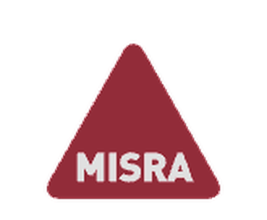

Static analysis vs autonomous agents on 488 real C/C++ bugs
Parasoft C/C++test (Flow Analysis + MISRA/CERT) on SWE-sweep's exact pre-fix code, against its best published agent result
Across 14 C/C++ repositories, bug-era code from git blob hashes
67 of the 162 mechanism bugs on the changed lines; 37.5% (183 of 488) across all bugs; 24.7% on the exact fixed line
SWE-sweep's best published result across these same repositories
The MISRA Conference question: are the traditional methods still relevant?
Raised at MISRA Conference 2026, Manchester, UK, 10 November 2026: LLM agents now resolve GitHub issues end to end. Should avionics, automotive, and medical teams keep paying for static analysis, MISRA, coverage, and review?

- Static analysis with coding-standard rule sets (MISRA C/C++, CERT)
- Deep flow analysis for data-flow defects
- Requirements-based testing, structural coverage up to MC/DC
- Human review, deterministic and qualifiable tools (DO-330, ISO 26262 TCL)
- Autonomous LLM agents: give them a repo, they find and fix bugs
- No hints, no locations, no failing tests
- Seductive promise: fewer tools, fewer engineers, one prompt
- Open question: what do they actually catch, and can they be qualified?
Stop arguing. Find the hardest published agent benchmark, run the same bugs through a commercial static analysis tool, and let the numbers speak.
SWE-sweep: agents must find the bugs themselves
A repository with dozens of confirmed real bugs, one instruction: fix as many as you can, no hints about location or nature
- 100 serious open-source repos, mean 292k lines of code, mean 690 contributors
- Real issue + PR pairs; every bug confirmed by the maintainers' own fix commit
- 4,068 accepted bugs in the released dataset
Best model (Sol 5.6 xhigh) resolved 4.7% of all bugs for $7k of compute; second place resolved about half at $224
Discovery, understanding, and repair in one trajectory, inside repos of up to 1.9M lines. When SWE-sweep's authors gave line ranges as hints, scores roughly doubled or tripled.
What we did: byte-identical bug-era code, real flags, the deployed rule sets
14 C/C++ repositories from SWE-sweep, 488 accepted bugs, one analysis unit per (file, blob hash)
oracle patch (one per bug, from SWE-sweep dataset) | parses to: pre-fix file + git blob hash + changed lines v materialize 679 bug-era file versions from git, byte-identical | 13 of 679 blobs absent from fetched history: skipped, reported v capture real compile flags from each project's own build system | CMake compile_commands.json (11 repos), make -n (2), scons compiledb (godot) v run cpptestcli with the deployed rule sets, gcc_13-64, 6 parallel runs | C repos: Flow Analysis Standard + MISRA C 2025 + CERT C (685 rules) | C++ repos: Flow Analysis Standard + MISRA C++ 2023 + CERT C++/C (660 rules) v map every violation back to bugs found (region): any violation on any changed line strict: violation on a line the eventual fix removed or rewrote
The scoreboard: 37.5% vs ~4.5% (part 1 of 2)
Parasoft flags 183 of 488 bugs on the changed lines; the best agent resolved about 22 of 488 on the same repositories
| Repo | Lang | Bugs | Parasoft found (region) | % region | % strict line | SWE-sweep best agent |
|---|---|---|---|---|---|---|
| jerryscript | C | 15 | 13 | 86.7% | 80.0% | 20.0% |
| opencv | C++ | 47 | 32 | 68.1% | 29.8% | 2.1% |
| duckdb | C++ | 109 | 56 | 51.4% | 25.7% | 2.8% |
| libexpat | C | 9 | 6 | 66.7% | 44.4% | 44.4% |
| proj | C++ | 21 | 10 | 47.6% | 28.6% | 9.5% |
| php-src | C | 26 | 11 | 42.3% | 26.9% | 0.0% |
| cvc5 | C++ | 38 | 17 | 44.7% (lower bound) | 26.3% | 2.6% |
| hdf5 | C | 14 | 6 | 42.9% | 28.6% | 28.6% |
The scoreboard (part 2 of 2): 183 of 488 flagged
Strictly counting findings on the exact line the maintainer's fix changed, Parasoft still found 21.1% of all bugs
| Repo | Lang | Bugs | Parasoft found (region) | % region | % strict line | SWE-sweep best agent |
|---|---|---|---|---|---|---|
| godot | C++ | 17 | 7 | 41.2% | 35.3% | 0.0% |
| z3 | C++ | 11 | 3 | 27.3% | 9.1% | 0.0% |
| arrow | C++ | 47 | 10 | 21.3% | 8.5% | 2.1% |
| micropython | C | 22 | 4 | 18.2% | 13.6% | 0.0% |
| tarantool | C | 40 | 5 | 12.5% | 7.5% | 7.5% |
| gdal | C++ | 72 | 3 | 4.2% | 1.4% | 0.0% |
| Total | 488 | 183 | 37.5% | 21.1% | ~4.5% |
183 of 488 bugs on the changed lines
67 of 162 at the changed region; 24.7% on the exact line
103 of 488 bugs
about 22 of 488 bugs
Same picture, drawn: the gap holds in 13 of 14 repos
Percentage of bugs detected, per repository: Parasoft on the pre-fix code vs SWE-sweep's best published agent
Flow Analysis alone caught 16 real defects, the classes that kill in safety-critical code
Deep interprocedural checks (BD-* rules), independent of any coding-standard convention
BD-PB-VOVR (unused value) on 5 bugs, 4 strictly on fixed lines: H5Tconv.c, H5Aint.c twice, H5Fint.c, H5T.c
BD-PB-INTWRAP integer wraparound in cast helpers and the optimizer; BD-PB-VALRANGE container index out of range; BD-PB-SWITCH unreachable branches
BD-PB-NOTINIT use before initialization; BD-PB-ERRNO, BD-PB-CC always-same condition, BD-PB-VOVR, BD-PB-CHECKRET
JerryScript's date-fmod bug: BD-PB-ERRNO fires on line 75, the exact fmod(time, ECMA_DATE_MS_PER_DAY) call the maintainers later rewrote to normalize negative results
opencv: unchecked return value (BD-PB-CHECKRET) and errno misuse (BD-PB-ERRNO); php-src: unused value in versioning.c. The other 9 repos: zero deep catches, all matches from rule-based sweep
What the rules saw on the buggy lines
Top rules flagging bug lines in the three most-analyzed repositories (bugs region / strict)
- CERT MSC41-a hard-coded strings: 22 / 9
- MISRA 8.0.1-b precedence parentheses: 20 / 9
- MISRA 9.5.1-a legacy for loops: 11 / 1
- MISRA 8.2.10-a recursion: 10 / 3
- MISRA 0.1.2-a unused return value: 8 / 6
- CERT ARR39-b pointer arithmetic: 5 / 2
- MISRA 9.3.1-b if/else compound body: 14 / 5
- MISRA 6.9.2-a std type names: 12 / 4
- MISRA 8.0.1-b precedence: 11 / 7
- MISRA 8.2.2-b C-style casts: 10 / 4
- MISRA 11.6.1-a explicit init: 8 / 2
- CERT ARR39-b pointer arithmetic: 4 / 3
- CERT INT31-j essential type category: 8 / 7
- MISRA C 2025 10.4-a compatible operands: 8 / 7
- MISRA C 2025 15.5-a single point of exit: 4 / 3
- CERT INT31-i cross-category assign: 4 / 2
- MISRA C 2025 10.3-b enum to other type: 4 / 2
- BD-PB-NOTINIT use before init: 2 / 0
What static analysis could even see: only a third of the bugs are its kind of bug
All 488 bugs classified by defect mechanism, judged from the lines the maintainers' fix removed; two independent blind passes plus a third boundary pass over 228 uncertain cases with pre-image context, rubric and per-bug labels published
MEMORY 119: overflow, UAF, null deref, uninitialized · RESOURCE 16: leaks, races · ERROR 27: unchecked returns, contract violations
LOGIC 300 (61.5%): wrong operator, constant, branch, protocol step, spec reading · OTHER 7 · UNKNOWN 19 (no snippet; excluded)
41.4% flagged at the changed region (67 of 162), 24.7% on the exact removed line, vs 37.5% / 21.1% over all bugs: on its home ground the tool clears the 40% mark and beats the overall rate
One third of real bugs are mechanism defects a deterministic tool flags with auditable findings. The logic two thirds are what review, requirements-based testing, and structural coverage are for, and agents (4.5%) find neither layer reliably
What this comparison does and does not say
Two numbers this far apart invite over-reading; the fine print is what makes the result trustworthy
Parasoft was pointed at the known buggy files. SWE-sweep agents searched whole repos (up to 1.9M lines) with no hints and had to produce passing fixes. Detection on located buggy code vs autonomous discovery and repair
37.5% overall, 41.4% on the mechanism bugs: a human gets a pointer to the defect line. Someone still judges it, fixes it, and proves the fix. SWE-sweep's number requires hidden tests to pass
Flow Analysis alone: 3.3%. Agents: 4.5%. On true-defect detection the two approaches are comparable; the headline gap comes from the rule sweep of the buggy lines
13 of 679 bug-era files unrecoverable from git history; cvc5 is a lower bound; gdal lost many files to preprocessing failures on generated code. All documented and reproducible
For DO-178C, ISO 26262, and IEC 62304: the decisive argument is qualification, not percentages
In avionics, automotive, and medical software the objective is minimizing escaped defects; labor cost of triage is part of the certification budget, not a reason to skip the check
- Deterministic: same inputs, same outputs, every time
- Qualifiable under DO-330 and ISO 26262 TCL with documented criteria
- Layered: static analysis + requirements-based testing + MC/DC + review
- A miss produces no false confidence; the other layers back it up
- Nondeterministic: reruns give different results
- Silent failures: reports success on code that does not work
- No accepted qualification scheme today as a development tool
- 4.5% resolution on this benchmark; even doubled, it cannot enter the certification evidence
Division of labor: tools find, humans judge, agents assist behind verifying gates
The data suggests a concrete hybrid for the next 3 to 5 years, not a replacement story in either direction
Safety case (certification evidence): deterministic tools + humans, always static analysis (MISRA/CERT + Flow Analysis) --> human triage and fix requirements-based testing, structural coverage to MC/DC, review LLM agents: not in this path until a qualification scheme exists Productivity layer (outside the safety case): agents behind gates agent triages static analysis findings --> human judges agent drafts candidate fixes --> deterministic tests verify agent drafts test cases --> reviewed, then executed by qualified tools What never to do: send an agent hunting a 1.9M-line repo for bugs and accept what it reports. On this benchmark it closes 4.5%, silently missing the rest, with no way to know which half it checked
Everything is public: recompute or challenge every number
github.com/zuwasi/swe-sweep-parasoft-benchmark: pipeline, manifests, results, raw Parasoft XML evidence
- fetch_repos.sh: clones the 14 repos at pinned base refs
- extract_bugs.py, materialize_preimages.py: byte-identical bug-era code from blob hashes
- capture_flags*.sh, gen_bdf.py, run_analysis.py: real flags, cpptestcli runs
- map_findings.py, build_report.py: violation-to-bug mapping
- manifests/: per-bug file, blob hash, changed lines
- results/: 14 per-repo JSONs, REPORT.md, category breakdown
- raw-reports/: gzipped Parasoft XML from every run
- parasoft-configs/: the exact 700/676-rule test configurations
Recomputed without a license from raw XML, or rerun the pipeline on any static analysis tool and compare. The SWE-sweep dataset itself comes from its authors at swesweep.com under their license
Traditional methods are not the past of safety-critical software. They are its audit trail.
Deterministic, qualifiable, layered: measured on 488 real bugs against the best autonomous agents

Embedded software consultancy, Parasoft and Perforce partner in Israel for over 20 years.
linkedin.com/in/liezrowice